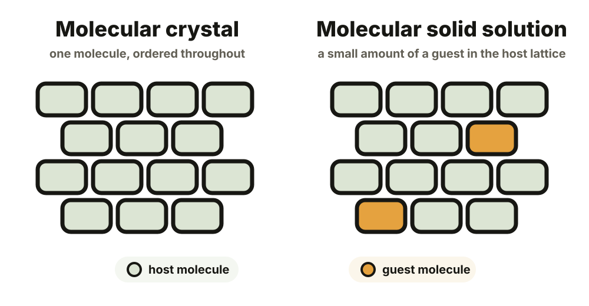
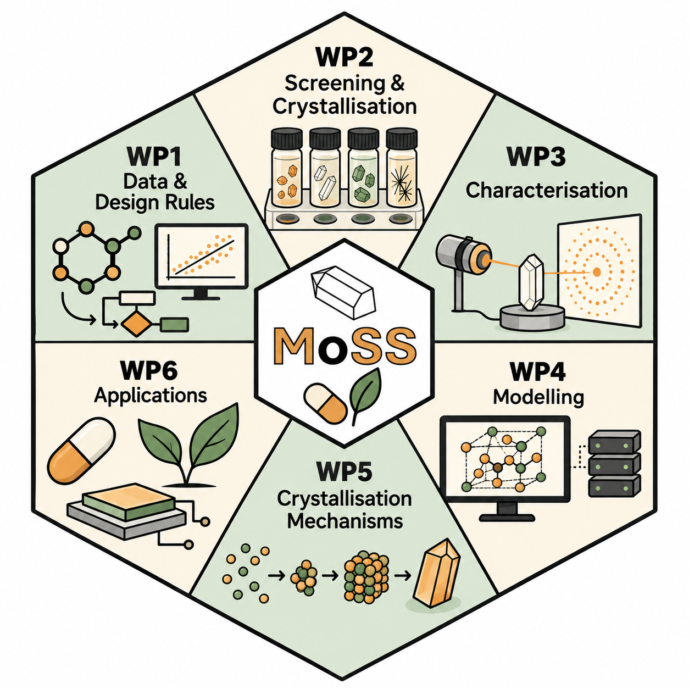
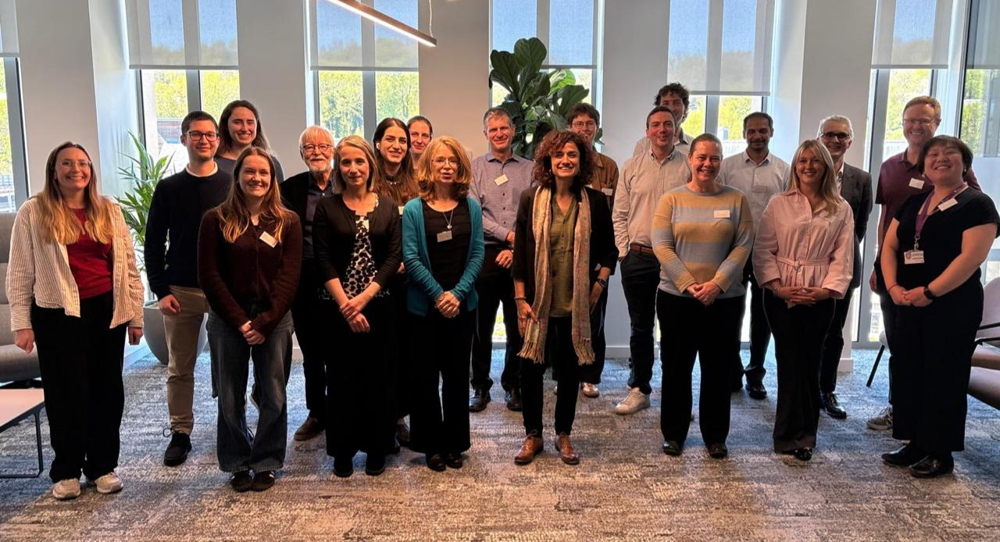

When will a MoSS form?
Establish the molecular and crystallographic rules that govern whether host and guest molecules are compatible.
The idea
A molecular solid solution forms when a crystal of one molecular compound incorporates a small amount of another molecule within its ordered lattice.
The main molecule is the host; the added molecule is the guest or dopant. Even a small amount of guest can influence crystal structure, stability, shape, growth and physical properties.

A molecular solid solution
The type and amount of guest molecule incorporated into a MoSS can influence how the host material grows and dissolves, its structure and properties, and how it performs.
Understanding these relationships can help us predict and ultimately tune material behaviour.
MoSS programme aim
MoSS aims to establish the principles, methods and predictive tools needed to use molecular solid solutions as a reliable strategy for controlling crystal structures and properties.
MoSS work packages
Build shared datasets and extract practical rules for MoSS design.
Discover and prepare new host–dopant crystal systems efficiently.
Resolve their structures, disorder and resulting material properties.
Explain and predict MoSS behaviour from molecular interactions.
Reveal how dopants influence nucleation, growth and polymorphism.
Translate the emerging principles into useful molecular materials.

Programme questions
Establish the molecular and crystallographic rules that govern whether host and guest molecules are compatible.
Understand how solid-solution formation affects polymorphism, morphology, stability, growth, solubility and mechanical behaviour.
Build datasets, models and AI-enabled approaches that allow scientists to design promising systems before making them.

Programme community
MoSS is led by Professor Aurora J. Cruz-Cabeza at Durham University. The programme brings together researchers from Durham, Leeds and Manchester and combines expertise in crystal engineering, high-throughput crystallisation, atomic-scale characterisation, modelling, engineering, data and AI.
The programme is funded by EPSRC and runs from September 2025 to March 2031.